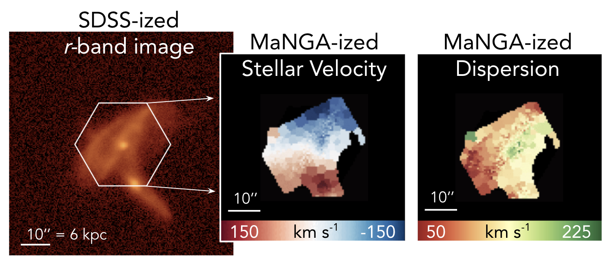
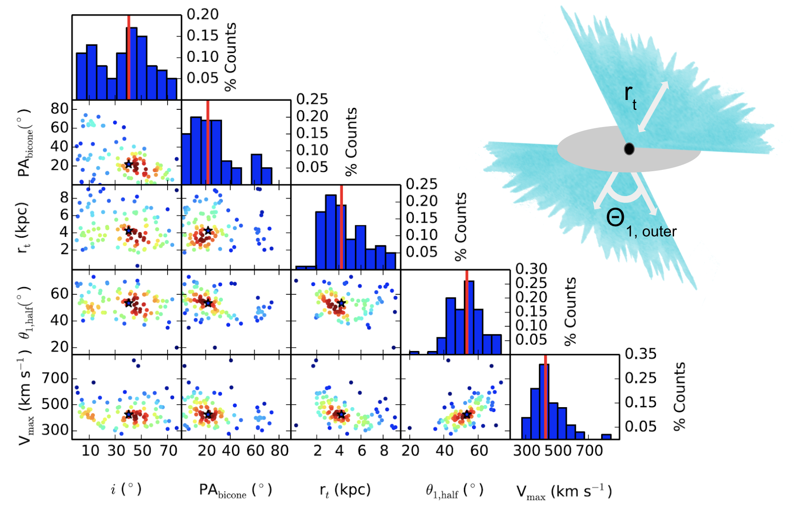
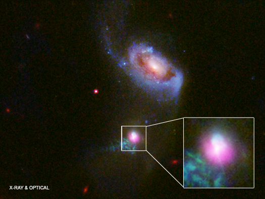
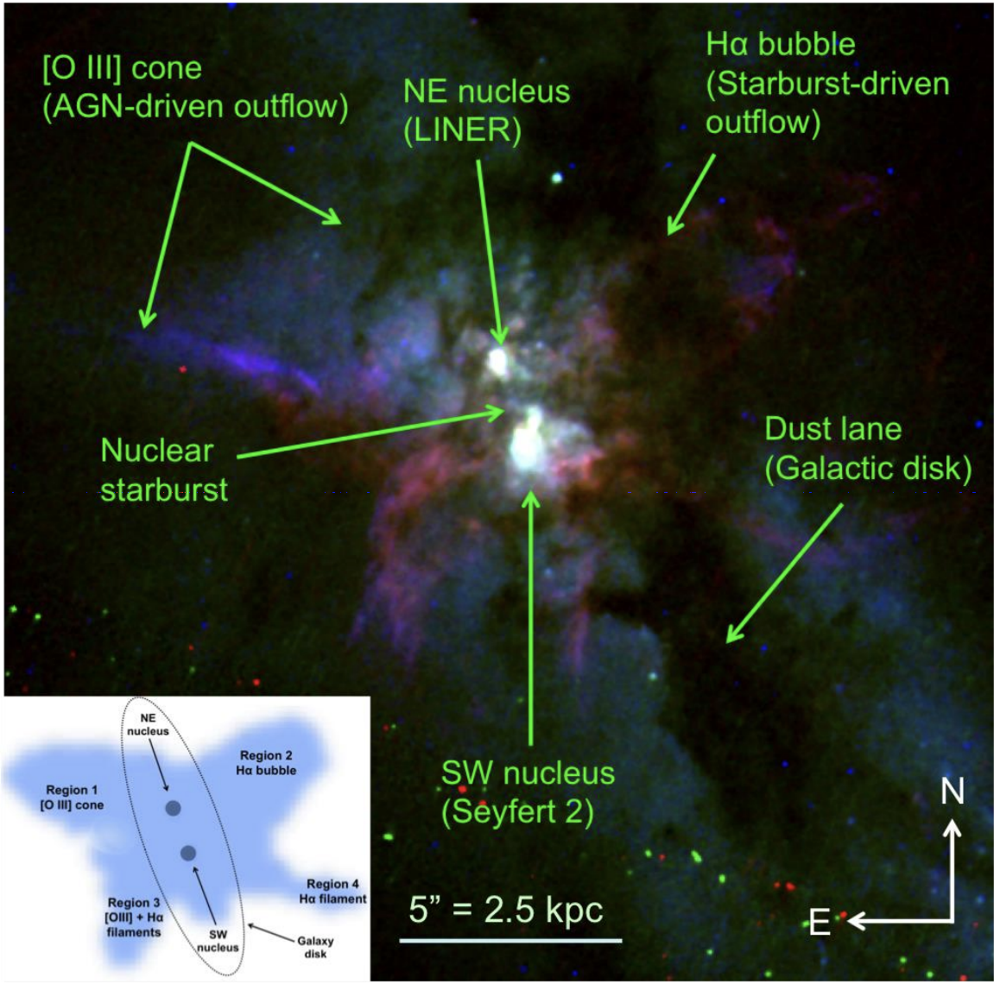

Galaxy Mergers: They are hard to identify
One way to study mergers is through detailed isolated merger simulations that allow me to take detailed notes about how the signatures of mergers change with time. I worked with Laura Blecha at the University of Florida to create a beautiful simulation suite of merging galaxies using the SUNRISE simulations:
From these simulations, I create mock observations to match [insert your favorite galaxy survey]. Here, I'm showing a mock SDSS r-band image and mock MaNGA stellar kinematic maps: 
From these mock images and kinematic maps, I have developed a galaxy merger classification tool that learns to identify various different types of galaxy mergers. The statistical learning classification tool relies upon parametric and non-parametric 'predictors', which I extract from the images and kinematic maps of the merger to assign a given galaxy a probability of being in a merger. This is my paper on the imaging side of the approach: Nevin+2019, and this is my paper on the stellar kinematic side of the approach: Nevin+2021
Active Galactic Nuclei: The motions of energetic gas
Supermassive black holes are one of the biggest paradoxes in the universe - not only are they one of the darkest places, but the region around them can shine bright as a quasar &#xU+1F48E;
. Supermassive black holes that are actively accreting gas are known as active galactic nuclei (AGN).I focus on the kinematics of AGN, including the powerful biconical outflows they can drive from their central regions. These outflows have the potential to impact their host galaxies (SMBHs live in the centers of galaxies), so I focus on modeling their energetics using an analytical MCMC approach. This technique has the advantage of providing a posterior probability of the parameters of the bicone, meaning that I can constrain both the geometry and the energetics of these AGN-driven outflows based on their optical emission lines. 
I have measured the energetics of 18 AGN-driven outflows (Nevin+2018) and I find that these moderate-luminosity AGN drive powerful outflows (below). This is exciting because moderate-luminosity AGN are more common than their more energetic cousins, the quasars, so they have more potential to impact the formation of stars in the universe. I also find that the host galaxies of the AGN-driven outflows tend to be redder with lower star formation rates; additionally, since these outflows have wide opening angles, they intersect the ISM of their host galaxies, which is a way for them to deliver energy to star forming regions.

I also spend a good amount of time fitting Gaussians to emission lines both to perform emission line diagnostics, such as BPT diagrams and to constrain the kinematic origin of various emission line features. I created a kinematic classification for double-peaked AGN and proved that the majority were associated with outflow-dominated kinematics (Nevin+2016).
Case studies: Focusing on fascinating galaxies and AGN
Sometimes I like to work with individual galaxies. These objects are really interesting for a number of reasons; many of them have complicated interconnections between AGN-driven outflows and star formation.
'J1354' is interesting because it has an example of an AGN turning on and off, powering an outflow first in the south and then one in the north (Comerford...Nevin+2017). 
NGC6240 has it all (Muller-Sanchez,Nevin+2018). It is a confirmed dual AGN and also hosts a star-formation driven outflow in addition to an AGN-driven outflow. The energy budget of both are required to shut down star formation. 
Machine learning: Exciting applications with astrophysical questions
As data gets larger and more sophisticated, it is increasingly important to pay attention to the techniques used to carry out the scientific analysis. It is truly a curse of too much data at times, and some of the aspects of the data often go unused just because the data is unwieldly, or it is initially difficult to visualize. I enjoy thinking about novel ways to get more bang for our buck. I particularly like to harness various machine learning techniques to do science, which often involves developing tools that push machine learning to become more scientific (i.e., with error analysis built in or with in depth discussion of the physical implications of the results).
One potential application of ML to astronomy is harnessing unsupervised clustering to uncover classes of objects, such as different types of kinematic maps (below).